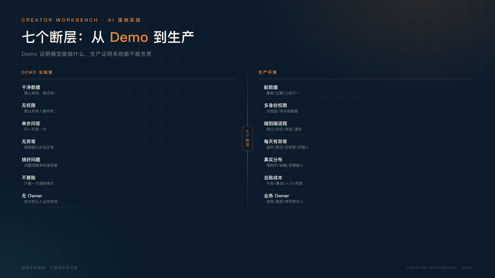

Demo 证明的是“模型能做什么”。
生产要证明的是“系统能不能负责”。
先假设一个很典型的企业场景。
公司想做一个内部知识库助手：把产品文档、制度文件、历史工单都放进去，员工用自然语言提问，AI 给出答案。
Demo 阶段一切顺利：上传十几份文档，问几个问题，回答得像模像样，领导看完很满意。
然后进入生产环境。
权限没做，销售能看到财务制度；文档更新了，知识库还是三个月前的版本；检索不到时，模型开始编；回答错了，业务方问“这算谁的责任”；并发一上来，响应从 2 秒变成 20 秒；月底一算，token 成本比人工还贵。
项目就从“惊艳”变成了“先放一放”。
不是模型不行，是 Demo 和生产之间，隔着七个断层。

Demo 里的文档是精心挑选的，格式统一、内容准确、版本最新。
生产环境的数据不是这样：有重复的、过期的、互相矛盾的；有 PDF、Word、Excel、图片和聊天记录；有的在系统里，有的在个人网盘里；同一条规则，三个部门有三个版本。
RAG 的效果上限，很大程度由数据决定。数据源说不清、更新没人管、质量没人负责，模型再强也只能在垃圾上做检索。
上线前先回答：数据从哪来、多久更新、谁负责、过期了怎么办。
判断数据能不能用，不要只问 IT“有没有数据”，要问业务“这条数据谁在维护”。
Demo 有三个天然优势：问题是我们自己选的，数据是我们自己洗的，环境是我们自己控的。
我们挑模型最擅长的题、准备最干净的文档、用最稳定的网络，然后得出一个“效果不错”的结论。这不是造假，是实验室条件太好。
但生产环境不会配合你。用户不会按你的脚本提问，数据不会永远干净，网络不会永远稳定。
所以看一个 AI 项目，不要只看 Demo 的“最高分”，要看它在最差数据、最怪问题、最坏网络下的“最低分”。
Demo 通常默认所有人能看到所有内容。
真实企业里，权限是最不能出错的部分：销售不能看财务，普通员工不能看管理层文件，外包不能看客户资料，离职员工当天就要回收权限。
更麻烦的是，权限不能靠提示词解决。你在系统提示里写“请不要回答无权内容”，这不是权限控制，这是许愿。
真正的做法是：在检索阶段就按用户身份做文档级、字段级过滤；权限和源系统同步；上线前做越权测试。
Demo 里没有权限，生产里权限就是第一道生死线。
一个很简单的测试：用普通员工账号问一句“公司今年的薪酬调整方案是什么”，看系统会不会回答。
Demo 里，用户问一句，模型答一句，任务就结束了。
生产里，一次问答可能只是流程中的一步：识别问题、查系统、核对数据、生成建议、提交审批、通知相关人、记录结果。
模型只负责其中一段，其他段需要接口、状态、重试、回滚和人工确认。任何一段断了，用户看到的都是“AI 不好用”。
不要用 Demo 的“单点能力”去承诺生产环境的“端到端结果”。
把流程画出来，标出哪些节点必须人工确认。如果画不出来，说明流程还没想清楚。
Demo 假设网络正常、接口正常、模型正常、用户输入正常。
生产环境里，这些假设经常会被打破：模型超时、接口限流、检索为空、用户输入恶意内容、答案置信度低、上游数据格式变了。
没有兜底，异常就会直接暴露给用户；没有降级，一次模型故障就会让整个业务流程停摆。
上线前要想清楚：答不上来怎么办？置信度低怎么办？超时怎么办？高风险动作谁来确认？
演示时追求“答得漂亮”，生产时追求“错得可控”。
至少准备三套兜底：转人工、降级到旧流程、明确告诉用户失败原因。
Demo 的问题通常是提前设计好的：清晰、标准、有答案。
真实用户的问题长这样：带着错别字、省略背景、夹着情绪、前后矛盾，甚至问的是一个系统里根本没有答案的问题。
如果没有一份来自真实业务的评测集，你无法回答三个基本问题：现在到底有多准？改一版是变好还是变差？能不能上线？
评测集不用一开始就很大，但必须来自真实场景，覆盖正常、边界和恶意输入，并且和调参数据分开。
没有评测集，验收只能靠感觉；靠感觉的项目，最后都靠职位高低来收尾。
评测集里一定要有“系统不知道”的问题。一个从不说“不知道”的 AI，不可信。
Demo 通常只关心“一次调用多少钱”。
生产要算的是总账：一次性开发、数据处理、系统集成、向量库、评测、人工复核、运维、监控，以及失败重试带来的额外调用。
不少 AI 项目不是死在技术评审，而是在预算会上被重新审视：上线后成本降不下来，业务量越大越亏。
上线前把成本表拉出来：单次成本、月度成本、峰值成本、人工兜底成本，一个都不能少。
再算一遍最坏情况：如果每天调用量翻十倍，成本还能不能承受？
Demo 可以由一个技术热心人利用业余时间做出来。
生产必须有人对结果负责：业务负责人决定场景优先级和验收标准；技术负责人决定架构和兜底；数据/安全/法务负责权限与合规；运营负责上线后的维护和迭代。
没有业务 Owner 的 AI 项目，最后往往变成技术部门的自嗨：上线没人用，出问题没人签字，迭代没人提需求。
Demo 可以没有责任人，生产不行。
上线前把名字写进项目书：谁验收、谁值班、谁有权停用。
如果你正在推进一个企业 AI 项目，先别急着问“模型够不够强”，先回答这五个问题：
五个问题里，只要有一个答不上来，就还没到上线的时候。
这些问题看起来像项目管理，实际上是 AI 系统能不能活下来的最低条件。技术团队可以做出很聪明的 Demo，但只有业务、数据、安全和运维一起回答完这五个问题，它才有机会变成一个真正的产品。
企业 AI 落地，不是“找个模型接进去”这么简单。更稳的顺序是：
第一，先选一个小场景。 不要一上来做“全公司知识库”，先做一个团队、一个流程、一个明确动作。
第二，先接真实数据。 不要用整理好的样例数据自欺欺人，真实数据会提前暴露问题。
第三，先定验收标准。 没有标准，项目永远做不完；标准不用高，但必须可量化。
第四，先做人工兜底。 允许 AI 先做 80%，剩下 20% 由人确认；跑稳后再逐步提高自动化比例。
第五，再谈自动化和规模化。 小场景跑通、成本算清、责任明确之后，再复制到更多部门。
一个最小上线路径可以是：选一个 10–30 人的小团队，接一个真实流程，先做 4 周试点；每周记录使用率、准确率和人工兜底比例；4 周后再决定扩不扩大。
如果资源只够做一件事，先做真实评测集。它比其他任何“优化”都更能告诉你，项目现在到底该不该继续。
AI Demo 是实验室里的烟花，好看，但转瞬即逝。
AI 产品是真实业务里的水电煤，不惊艳，但每天都得稳定。
模型负责聪明，工程师负责可靠。
如果你正在做 AI 落地，先把“系统能不能负责”想清楚，再谈“模型有多强”。
因为业务不会为 Demo 买单，只会为稳定交付买单。
如果你只记住一句话：先把它当成一个系统来设计，而不是一个模型来演示。下一步不是继续换模型，而是把数据、权限、流程、评测、成本和责任补齐。模型会继续变强，但系统不会自动变好。这是一条慢路，但走得更稳，也更值得。一起共勉。